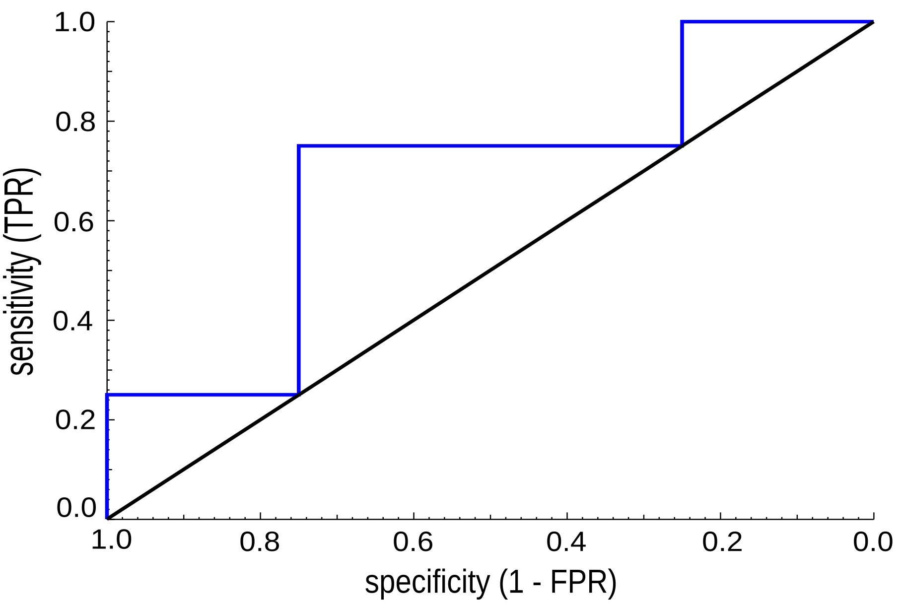

ROC - Receiver Operating Characteristic for multiple class


A receiver operating characteristic (ROC) curve aims to summarize the performance of a binary classifier system as its discrimination threshold is varied. The multiple class option allows to handle systems with more than two classes.

Installation
$ npm i ml-roc-multiclass
Usage
import { getRocCurve, getAuc, getClasses } from 'ml-roc-multiclass';
const targets = [
'class1',
'class1',
'class1',
'class1',
'class2',
'class2',
'class2',
'class2',
];
const predictions = [0.95, 0.15, 0.13, 0.08, 0.93, 0.91, 1.99, 0.12];
const classes = getClasses(targets);
// console.log(classes);
// [
// {
// "class":"class1",
// "value":0,
// "ids":[0,1,2,3]
// },
// {
// "class":"class2",
// "value":1,
// "ids":[4,5,6,7]
// }
// ]
const curve = getRocCurve(targets, predictions);
// console.log(curve);
// [
// {
// "sensitivities": [1, 1, 0.75, 0.75, 0.75, 0.5, 0.25, 0.25, 0],
// "specificities": [0, 0.25, 0.25, 0.5, 0.75, 0.75, 0.75, 1, 1]
// }
// ]
const auc = getAuc(curve);
console.log(auc); // 0.6875
API Documentation
References
Bewick, V., Cheek, L., & Ball, J. (2004). Statistics review 13: receiver operating characteristic curves. Critical care, 8(6), 1-5.
Hand, D. J., & Till, R. J. (2001). A simple generalisation of the area under the ROC curve for multiple class classification problems. Machine learning, 45(2), 171-186.
https://en.wikipedia.org/wiki/Receiver_operating_characteristic.